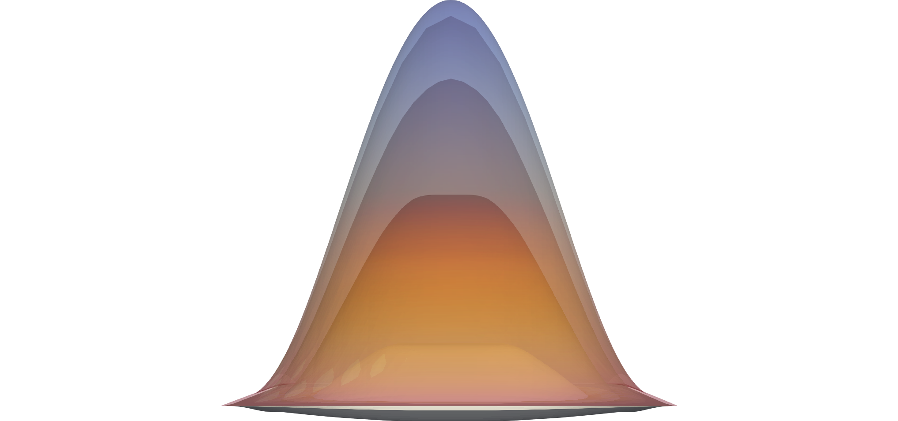
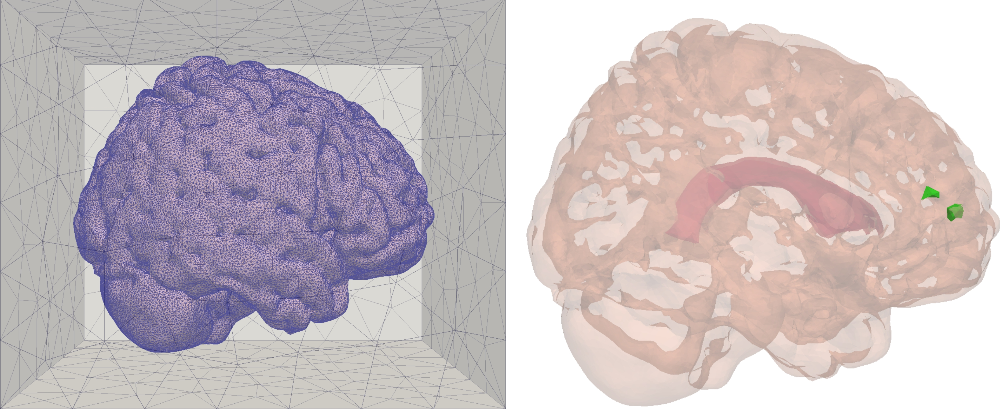

I am a Postdoctoral Research Assistant in Computational Stochastics at the University of Oxford working with Michael B. Giles. My research is in the field of uncertainty quantification and computational and industrial mathematics, with a focus on multilevel (quasi-) Monte Carlo methods, low-precision partial differential equation (PDE) solvers, PDEs with random coefficients and the finite element method. During my DPhil (PhD), I worked with Patrick E. Farrell, Michael B. Giles and Marie E. Rognes to quantify the uncertainty in numerical simulations of brain fluid movement in real-life geometries.
I am an extensive user of and occasional contributor to FEniCS, libsupermesh and Pragmatic.
A lay-man description of my DPhil research is available here.
FEniCS-based multilevel (quasi) Monte Carlo software for PDEs with random coefficients: click here.
C++ and Python low-precision emulator software here.
Research Interests
Finite Element Method
Multilevel Monte Carlo and Multilevel Quasi Monte Carlo methods
Low-precision PDE solvers
Uncertainty Quantification for PDEs with random coefficients
Mathematical Modelling of the Brain Physiology
Deflation for Complementarity Problems
Highlighted Publications

Learn more → M. Croci, and M. B. Giles Effects of round-to-nearest and stochastic rounding in the numerical solution of the heat equation in low precision Submitted to SINUM Preprint
Learn more → M. Croci, V. Vinje, M. E. Rognes Fast uncertainty quantification of tracer distribution in the brain interstitial fluid with multilevel and quasi Monte Carlo to appear in International Journal for Numerical Methods in Biomedical Engineering Preprint